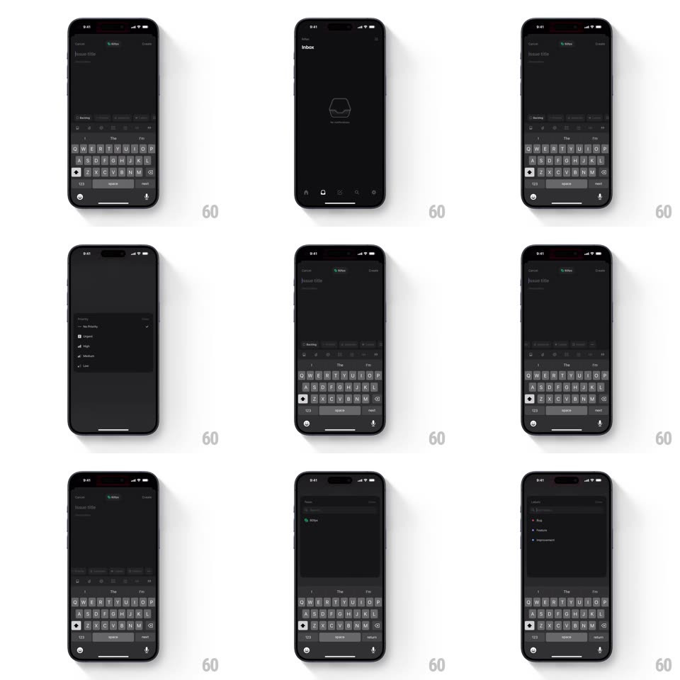

Media
Frame-by-frame

Rebuild this interaction 1:1: Linear's issue-action popup - from the new-issue form, tapping a property button raises a floating dark menu (priority: No Priority/Urgent/High/Medium/Low; assignee options) above the keyboard, and picking an item checks it and dismisses with the value applied.

Rebuild this interaction 1:1: Linear's issue-action popup - from the new-issue form, tapping a property button raises a floating dark menu (priority: No Priority/Urgent/High/Medium/Low; assignee options) above the keyboard, and picking an item checks it and dismisses with the value applied. ## Integration Integration: stack-agnostic spec - springs given as stiffness/damping, timed motions as duration + curve; map every value to your framework and animation library of choice. ## Scene Dark Linear mobile UI: Inbox empty state, then the create form (title "issue title", description, property toolbar above the keyboard: backlog, label, priority, assignee icons). Popup state: a floating dark menu anchored to the tapped property - priority lists No Priority, Urgent, High, Medium, Low with their glyphs; the assign menu lists people with avatars. ## Motion spec Pattern: anchored popup menu, ~250ms. - Open: the menu scales up from its anchor button (scale 0.85 -> 1, transform-origin at anchor, 200ms, ease-out) with a 4px rise and fade. - Select: tapping a row flashes its background (100ms), ticks its check (150ms), and dismisses the menu (scale 1 -> 0.9 + fade, 150ms). - Apply: the property toolbar icon swaps to the chosen value (crossfade, 150ms). - Dismiss: tapping outside fades the menu out (150ms) with no change. ## Calibration - The menu never collides with the keyboard - it anchors above the toolbar, flipping if needed. - The keyboard stays up the whole time; only the menu layers over it. ## Reduced motion Menu fades in/out (150ms); selection applies instantly. ## Don't miss - Priority glyphs are distinct: bars for High/Medium/Low, a filled mark for Urgent. - The popup is pure dark with thin dividers - Linear's flat chrome, no shadows beyond a faint outline.